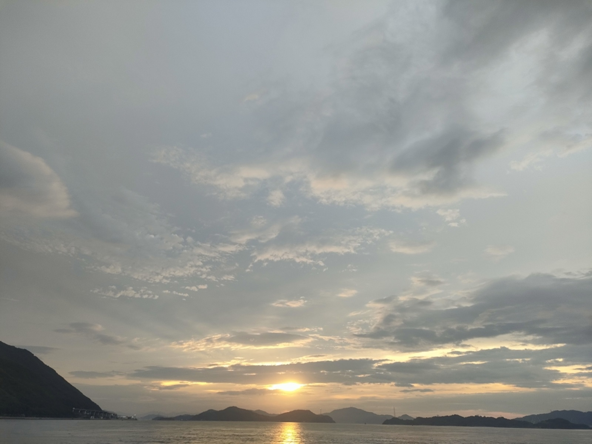
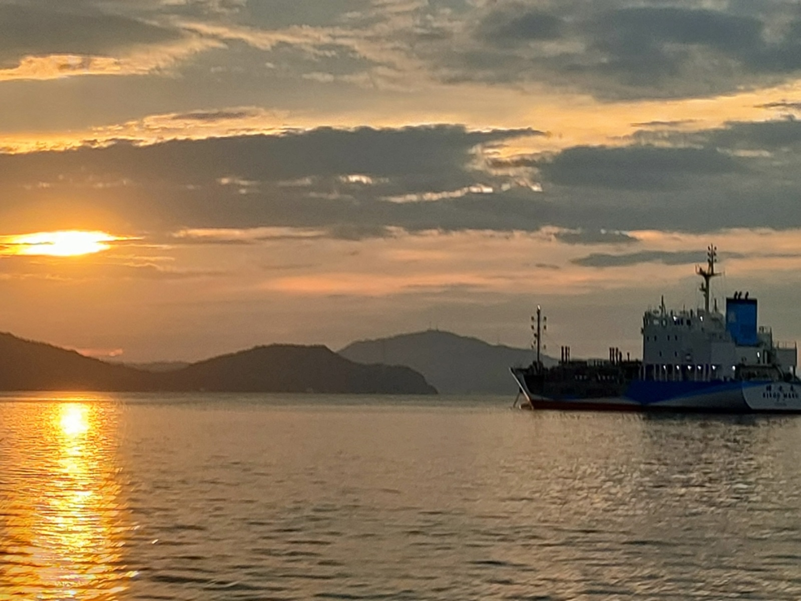

0006 しまなみの日の出

こんにちは、hanaponです。
三連休の最終日、いかがお過ごしでしょうか。
私はサイクル＆フェリー＆トレインで広島市内へ。
とは言っても、自転車はフェリー置き場におきっぱなし、なのはおいておいて、、、、。
朝６時頃、フェリー上より日の出を鑑賞することができました。

穏やかな海も良いですが、広い空を見上げて心に余白を作る習慣も作っていきたいところ。
時折、他の船を間近に見ることが出来るときもあります。
船首をみると錨をおろしているみたいなので、停泊していたようですね。↓

島民の皆さんは橋が架かったことで車の生活に転換されましたが、移住者である私からみると、しまなみ海道沿いでの生活は”フェリーを活用する”ことが時短、気分転換、観光気分、心の余裕も生むなどのメリットに繋がるので、ぜひおすすめしたいところです。
小さめのフェリーでも自転車を載せることもできます。
ライド＆フェリー＆ライドという感じて離島にアクセスするのはとても有意義です。
非日常の体験が心に栄養を与えてくれますので、ぜひ機会を作ってみてくださいね。